DeepFM
题名：DeepFM: A Factorization-Machine based Neural Network for CTR Prediction
中文：DeepFM：一种基于因子分解机的 CTR 预测神经网络
Huifeng Guo, Ruiming Tang, Yunming Ye, Zhenguo Li, Xiuqiang He
哈尔滨工业大学深圳研究生院；华为诺亚方舟实验室
摘要 / Abstract
Learning sophisticated feature interactions behind user behaviors is critical in maximizing CTR for recommender systems.
学习用户行为背后复杂的特征交互，对于最大化推荐系统中的点击率（CTR）至关重要。
Despite great progress, existing methods seem to have a strong bias towards low- or high-order interactions, or require expertise feature engineering.
尽管已有方法取得了很大进展，但它们似乎强烈偏向低阶或高阶交互，或者需要专家经验驱动的特征工程。
In this paper, we show that it is possible to derive an end-to-end learning model that emphasizes both low- and high-order feature interactions.
本文表明，可以推导出一种端到端学习模型，同时强调低阶和高阶特征交互。
The proposed model, DeepFM, combines the power of factorization machines for recommendation and deep learning for feature learning in a new neural network architecture.
提出的模型 DeepFM 在一种新的神经网络架构中，结合了因子分解机在推荐中的能力和深度学习在特征学习中的能力。
Compared to the latest Wide & Deep model from Google, DeepFM has a shared input to its “wide” and “deep” parts, with no need of feature engineering besides raw features.
与 Google 最新的 Wide & Deep 模型相比，DeepFM 的“wide”部分和“deep”部分共享输入，除了原始特征外不需要额外的特征工程。
Comprehensive experiments are conducted to demonstrate the effectiveness and efficiency of DeepFM over the existing models for CTR prediction, on both benchmark data and commercial data.
论文在基准数据和商业数据上进行了全面实验，证明 DeepFM 相比现有 CTR 预测模型具有更好的效果和效率。
1 引言 / Introduction
The prediction of click-through rate (CTR) is critical in recommender system, where the task is to estimate the probability a user will click on a recommended item.
点击率（CTR）预测在推荐系统中非常关键，其任务是估计用户点击某个推荐物品的概率。
In many recommender systems the goal is to maximize the number of clicks, and so the items returned to a user can be ranked by estimated CTR; while in other application scenarios such as online advertising it is also important to improve revenue, and so the ranking strategy can be adjusted as CTR×bid across all candidates, where “bid” is the benefit the system receives if the item is clicked by a user.
在许多推荐系统中，目标是最大化点击数量，因此返回给用户的物品可以按估计 CTR 排序；而在在线广告等其他应用场景中，提高收入同样重要，因此排序策略可调整为对所有候选项计算 CTR×bid，其中“bid”表示用户点击该物品后系统获得的收益。
In either case, it is clear that the key is in estimating CTR correctly.
无论哪种情况，关键显然都在于准确估计 CTR。
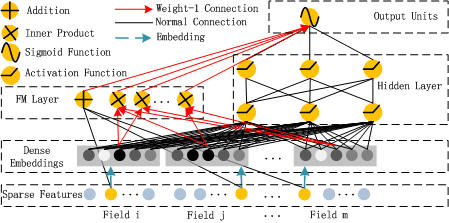
图 1 中文：DeepFM 的 wide & deep 架构。wide 组件和 deep 组件共享同一个原始特征输入向量，使 DeepFM 能够直接从原始输入特征中同时学习低阶和高阶特征交互。
It is important for CTR prediction to learn implicit feature interactions behind user click behaviors.
对 CTR 预测而言，学习用户点击行为背后的隐式特征交互非常重要。
By our study in a mainstream apps market, we found that people often download apps for food delivery at meal-time, suggesting that the (order-2) interaction between app category and time-stamp can be used as a signal for CTR.
通过对一个主流应用市场的研究，作者发现人们常在用餐时间下载外卖应用，这表明“应用类别”和“时间戳”之间的二阶交互可以作为 CTR 的信号。
As a second observation, male teenagers like shooting games and RPG games, which means that the (order-3) interaction of app category, user gender and age is another signal for CTR.
第二个观察是，男性青少年喜欢射击游戏和角色扮演游戏，这意味着“应用类别、用户性别、年龄”的三阶交互也是 CTR 的另一个信号。
In general, such interactions of features behind user click behaviors can be highly sophisticated, where both low- and high-order feature interactions should play important roles.
一般而言，用户点击行为背后的这类特征交互可能非常复杂，其中低阶和高阶特征交互都应发挥重要作用。
According to the insights of the Wide & Deep model from Google, considering low- and high-order feature interactions simultaneously brings additional improvement over the cases of considering either alone.
根据 Google 的 Wide & Deep 模型带来的洞察，同时考虑低阶和高阶特征交互，比单独考虑其中一种能带来额外提升。
The key challenge is in effectively modeling feature interactions.
核心挑战在于如何有效建模特征交互。
Some feature interactions can be easily understood, thus can be designed by experts (like the instances above).
有些特征交互容易理解，因此可以由专家设计出来（如上面的例子）。
However, most other feature interactions are hidden in data and difficult to identify a priori (for instance, the classic association rule “diaper and beer” is mined from data, instead of discovering by experts), which can only be captured automatically by machine learning.
然而，大多数其他特征交互隐藏在数据中，难以事先识别（例如经典的“尿布和啤酒”关联规则是从数据中挖掘出来的，而不是专家发现的），只能由机器学习自动捕获。
Even for easy-to-understand interactions, it seems unlikely for experts to model them exhaustively, especially when the number of features is large.
即便对于容易理解的交互，当特征数量很大时，也不太可能由专家穷尽地建模。
Despite their simplicity, generalized linear models, such as FTRL, have shown decent performance in practice.
尽管结构简单，FTRL 等广义线性模型在实践中表现不错。
However, a linear model lacks the ability to learn feature interactions, and a common practice is to manually include pairwise feature interactions in its feature vector.
但是，线性模型缺乏学习特征交互的能力，常见做法是在特征向量中手工加入成对特征交互。
Such a method is hard to generalize to model high-order feature interactions or those never or rarely appear in the training data.
这种方法难以泛化到高阶特征交互，也难以处理训练数据中从未出现或很少出现的交互。
Factorization Machines (FM) model pairwise feature interactions as inner product of latent vectors between features and show very promising results.
因子分解机（FM）把成对特征交互建模为特征隐向量之间的内积，并展示出很有前景的结果。
While in principle FM can model high-order feature interaction, in practice usually only order-2 feature interactions are considered due to high complexity.
虽然原则上 FM 可以建模高阶特征交互，但由于复杂度高，实践中通常只考虑二阶特征交互。
As a powerful approach to learning feature representation, deep neural networks have the potential to learn sophisticated feature interactions.
作为学习特征表示的强大方法，深度神经网络有潜力学习复杂的特征交互。
Some ideas extend CNN and RNN for CTR prediction, but CNN-based models are biased to the interactions between neighboring features while RNN-based models are more suitable for click data with sequential dependency.
一些方法把 CNN 和 RNN 扩展到 CTR 预测，但基于 CNN 的模型偏向相邻特征之间的交互，而基于 RNN 的模型更适合具有序列依赖的点击数据。
FNN pre-trains FM before applying DNN, thus limited by the capability of FM.
FNN 在应用 DNN 前先预训练 FM，因此受到 FM 能力的限制。
PNN introduces a product layer between embedding layer and fully-connected layer, but like other deep models captures little low-order feature interactions.
PNN 在 embedding 层和全连接层之间引入 product 层，但与其他深度模型类似，它捕获的低阶特征交互很少。
Wide & Deep combines a linear “wide” model and a deep model, but requires two different inputs and the wide input still relies on expertise feature engineering.
Wide & Deep 结合了线性的“wide”模型和深度模型，但需要两种不同输入，并且 wide 部分输入仍依赖专家特征工程。
Existing models are biased to low- or high-order feature interaction, or rely on feature engineering.
现有模型要么偏向低阶或高阶特征交互，要么依赖特征工程。
In this paper, we show it is possible to derive a learning model that is able to learn feature interactions of all orders in an end-to-end manner, without any feature engineering besides raw features.
本文表明，可以得到一种学习模型，能够以端到端方式学习所有阶数的特征交互，除原始特征外不需要任何特征工程。
Contribution 1: DeepFM integrates FM and DNN, modeling low-order interactions like FM and high-order interactions like DNN, and can be trained end-to-end without feature engineering.
贡献 1：DeepFM 集成 FM 与 DNN，像 FM 一样建模低阶交互，像 DNN 一样建模高阶交互，并且可在没有特征工程的情况下端到端训练。
Contribution 2: DeepFM can be trained efficiently because its wide part and deep part share the same input and the embedding vector.
贡献 2：DeepFM 可以高效训练，因为它的 wide 部分和 deep 部分共享相同输入和 embedding 向量。
Contribution 3: DeepFM is evaluated on benchmark data and commercial data, showing consistent improvement over existing CTR prediction models.
贡献 3：DeepFM 在基准数据和商业数据上进行了评估，相比现有 CTR 预测模型表现出稳定提升。
2 方法 / Our Approach
Suppose the data set for training consists of n instances (χ,y), where χ is an m-fields data record usually involving a pair of user and item, and y∈{0,1} is the associated label indicating user click behaviors.
假设训练数据集包含 n 个样本 (χ,y)，其中 χ 是一个包含 m 个 field 的数据记录，通常涉及一对用户和物品；y∈{0,1} 是相关标签，用来表示用户点击行为。
y=1 means the user clicked the item, and y=0 otherwise.
y=1 表示用户点击了该物品，y=0 表示没有点击。
χ may include categorical fields (e.g., gender, location) and continuous fields (e.g., age).
χ 可以包含类别型 field（如性别、位置）和连续型 field（如年龄）。
Each categorical field is represented as a vector of one-hot encoding, and each continuous field is represented as the value itself, or a vector of one-hot encoding after discretization.
每个类别型 field 表示为 one-hot 编码向量；每个连续型 field 表示为其数值本身，或离散化后的 one-hot 编码向量。
Then, each instance is converted to (x,y), where x=[xfield1,xfield2,...,xfieldm] is a d-dimensional vector.
然后，每个样本被转换为 (x,y)，其中 x=[xfield1,xfield2,...,xfieldm] 是一个 d 维向量。
Normally, x is high-dimensional and extremely sparse.
通常，x 是高维且极其稀疏的。
The task of CTR prediction is to build a prediction model ŷ=CTR_model(x) to estimate the probability of a user clicking a specific app in a given context.
CTR 预测的任务是构建预测模型 ŷ=CTR_model(x)，估计用户在给定上下文中点击某个特定应用的概率。
2.1 DeepFM
We aim to learn both low- and high-order feature interactions.
我们的目标是同时学习低阶和高阶特征交互。
To this end, we propose a Factorization-Machine based neural network (DeepFM).
为此，作者提出了一种基于因子分解机的神经网络（DeepFM）。
DeepFM consists of two components, FM component and deep component, that share the same input.
DeepFM 由两个组件组成：FM 组件和 deep 组件，它们共享同一输入。
For feature i, a scalar wi is used to weigh its order-1 importance, and a latent vector Vi is used to measure its impact of interactions with other features.
对于特征 i，一个标量 wi 用来衡量其一阶重要性，一个隐向量 Vi 用来度量它与其他特征交互时的影响。
Vi is fed in FM component to model order-2 feature interactions, and fed in deep component to model high-order feature interactions.
Vi 被送入 FM 组件用于建模二阶特征交互，同时也被送入 deep 组件用于建模高阶特征交互。
All parameters, including wi, Vi, and the network parameters W(l), b(l), are trained jointly for the combined prediction model.
所有参数，包括 wi、Vi 以及网络参数 W(l)、b(l)，都会为组合预测模型进行联合训练。
where ŷ∈(0,1) is the predicted CTR, yFM is the output of FM component, and yDNN is the output of deep component.
其中 ŷ∈(0,1) 是预测 CTR，yFM 是 FM 组件的输出，yDNN 是 deep 组件的输出。
FM Component / FM 组件
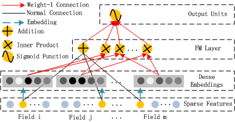
图 2 中文：FM 的架构。
The FM component is a factorization machine, which is proposed to learn feature interactions for recommendation.
FM 组件是一个因子分解机，用于学习推荐中的特征交互。
Besides linear order-1 interactions among features, FM models pairwise order-2 feature interactions as inner product of respective feature latent vectors.
除了特征之间的线性一阶交互外，FM 还把成对二阶特征交互建模为相应特征隐向量的内积。
It can capture order-2 feature interactions much more effectively than previous approaches especially when the dataset is sparse.
尤其在数据集稀疏时，它比以往方法更有效地捕获二阶特征交互。
In previous approaches, the parameter of an interaction of features i and j can be trained only when feature i and feature j both appear in the same data record.
在以往方法中，特征 i 和 j 的交互参数只有当二者同时出现在同一条数据记录中时才能被训练。
While in FM, it is measured via the inner product of their latent vectors Vi and Vj.
而在 FM 中，该交互通过它们的隐向量 Vi 和 Vj 的内积来度量。
Thanks to this flexible design, FM can train latent vector Vi whenever i appears in a data record.
得益于这种灵活设计，只要特征 i 出现在数据记录中，FM 就可以训练其隐向量 Vi。
Therefore, feature interactions that never or rarely appeared in training data are better learnt by FM.
因此，对于训练数据中从未出现或很少出现的特征交互，FM 也能更好地学习。
where w∈Rd and Vi∈Rk; the Addition unit reflects the importance of order-1 features, and the Inner Product units represent the impact of order-2 feature interactions.
其中 w∈Rd，Vi∈Rk；Addition 单元反映一阶特征的重要性，Inner Product 单元表示二阶特征交互的影响。
Deep Component / 深度组件
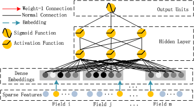
图 3 中文：DNN 的架构。
The deep component is a feed-forward neural network, which is used to learn high-order feature interactions.
deep 组件是一个前馈神经网络，用于学习高阶特征交互。
Compared to neural networks with image or audio data as input, the input of CTR prediction is highly sparse, super high-dimensional, categorical-continuous-mixed, and grouped in fields.
与以图像或音频为输入的神经网络相比，CTR 预测的输入通常高度稀疏、超高维、类别与连续特征混合，并按 field 分组。
This suggests an embedding layer to compress the input vector to a low-dimensional, dense real-value vector before further feeding into the first hidden layer.
这意味着需要一个 embedding 层，在送入第一个隐藏层之前，把输入向量压缩为低维稠密实值向量。
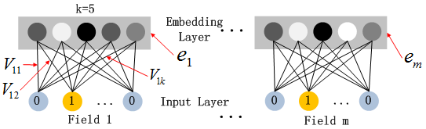
图 4 中文：Embedding 层的结构。
While the lengths of different input field vectors can be different, their embeddings are of the same size k.
不同输入 field 向量的长度可以不同，但它们的 embedding 大小相同，均为 k。
The latent feature vectors V in FM now serve as network weights learned and used to compress input field vectors to embedding vectors.
FM 中的隐特征向量 V 现在作为网络权重，被学习并用于把输入 field 向量压缩为 embedding 向量。
Rather than using latent feature vectors of FM to initialize the networks as in FNN, this work includes the FM model as part of the overall learning architecture.
本文不像 FNN 那样用 FM 的隐特征向量初始化网络，而是把 FM 模型作为整体学习架构的一部分。
As such, it eliminates the need of pre-training by FM and instead jointly trains the overall network end-to-end.
这样就消除了由 FM 预训练的需要，转而端到端联合训练整个网络。
where ei is the embedding of the i-th field and m is the number of fields.
其中 ei 是第 i 个 field 的 embedding，m 是 field 的数量。
where l is the layer depth and σ is an activation function; a(l), W(l), b(l) are the output, model weight, and bias of the l-th layer.
其中 l 是层深度，σ 是激活函数；a(l)、W(l)、b(l) 分别是第 l 层的输出、模型权重和偏置。
After that, a dense real-value feature vector is generated and finally fed into the sigmoid function for CTR prediction.
之后会生成一个稠密实值特征向量，并最终送入 sigmoid 函数进行 CTR 预测。
FM component and deep component share the same feature embedding, bringing two benefits: learning both low- and high-order interactions from raw features, and avoiding expertise feature engineering required in Wide & Deep.
FM 组件和 deep 组件共享同一特征 embedding，带来两个好处：从原始特征中同时学习低阶与高阶交互，并避免 Wide & Deep 中所需的专家特征工程。
3 实验 / Experiments
We compare DeepFM and other state-of-the-art models empirically; DeepFM is more effective than any other model and its efficiency is comparable to the best among them.
作者对 DeepFM 与其他最先进模型进行了经验比较；DeepFM 比其他模型更有效，并且效率可与其中最好者相当。
3.1 Experiment Setup / 实验设置
Criteo Dataset includes 45 million users’ click records, with 13 continuous features and 26 categorical features; 90% is used for training and 10% for testing.
Criteo 数据集包含 4500 万条用户点击记录，含 13 个连续特征和 26 个类别特征；90% 用于训练，10% 用于测试。
Company* Dataset uses 7 consecutive days of click records from a game center for training and the next day for testing, with about 1 billion records.
Company* 数据集使用某游戏中心连续 7 天点击记录训练，用下一天测试，共约 10 亿条记录。
The dataset contains app features, user features, and context features.
该数据集包含应用特征、用户特征和上下文特征。
The evaluation metrics are AUC and Logloss.
评估指标为 AUC 和 Logloss。
Nine models are compared: LR, FM, FNN, PNN variants, Wide & Deep variants, and DeepFM.
实验比较 9 个模型：LR、FM、FNN、PNN 的若干变体、Wide & Deep 的若干变体，以及 DeepFM。
For Criteo, the models follow PNN settings: dropout 0.5, network 400-400-400, Adam optimizer, tanh for IPNN and relu for other deep models; LR uses FTRL, FM uses Adam, and FM latent dimension is 10.
在 Criteo 上，模型遵循 PNN 设置：dropout 为 0.5，网络结构为 400-400-400，优化器为 Adam，IPNN 使用 tanh，其他深度模型使用 relu；LR 使用 FTRL，FM 使用 Adam，FM 隐维度为 10。
3.2 Performance Evaluation / 性能评估
The efficiency of deep learning models is important to real-world applications.
深度学习模型的效率对真实应用非常重要。
Pre-training of FNN makes it less efficient; IPNN and PNN* are computationally expensive; DeepFM achieves almost the most efficient in both CPU and GPU tests.
FNN 的预训练使其效率较低；IPNN 和 PNN* 计算代价高；DeepFM 在 CPU 和 GPU 测试中几乎达到最高效率。
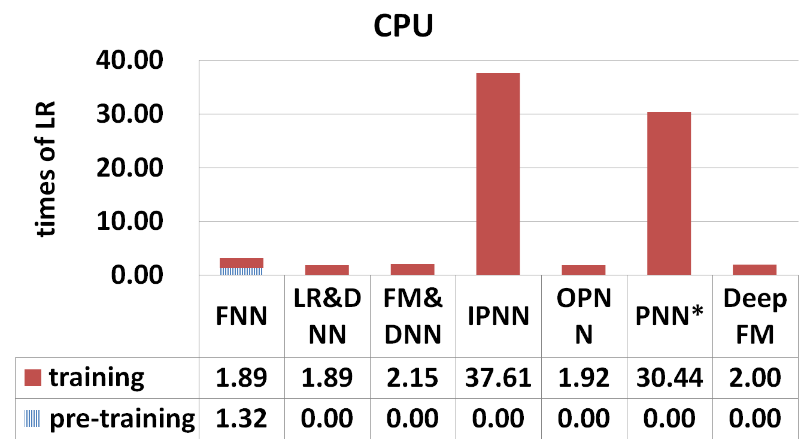
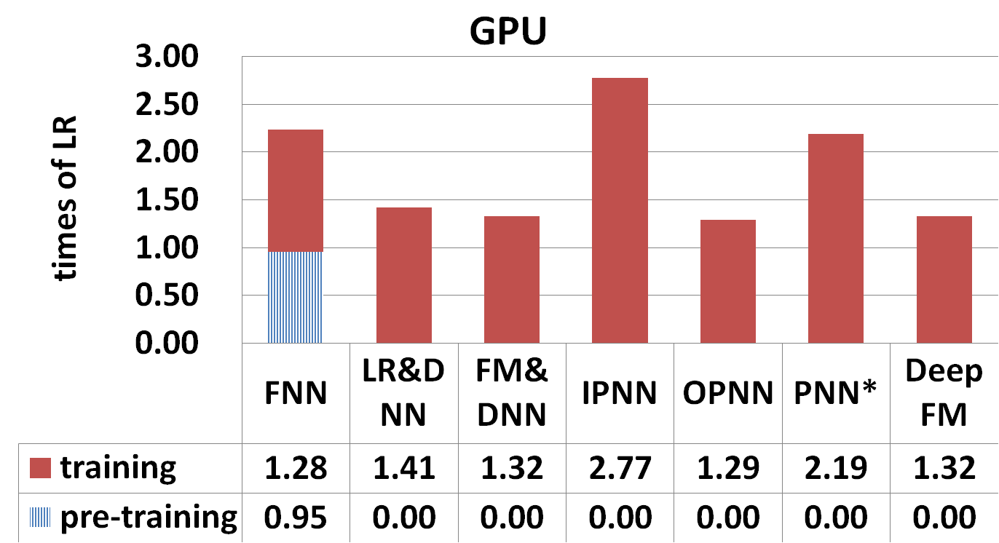
图 6 中文：时间比较。
Learning feature interactions improves CTR prediction; LR is the only model that does not consider interactions and performs worse.
学习特征交互能提升 CTR 预测；LR 是唯一不考虑特征交互的模型，因此表现更差。
DeepFM outperforms LR by 0.86% and 4.18% in AUC, and by 1.15% and 5.60% in Logloss on Company* and Criteo.
在 Company* 和 Criteo 上，DeepFM 相比 LR 的 AUC 分别提升 0.86% 和 4.18%，Logloss 分别改善 1.15% 和 5.60%。
Learning high- and low-order feature interactions simultaneously and properly improves CTR prediction.
同时且合理地学习高阶和低阶特征交互可以提升 CTR 预测。
Sharing the same feature embedding for high- and low-order interaction learning improves CTR prediction.
在高阶和低阶交互学习中共享同一特征 embedding，可以提升 CTR 预测效果。
| 模型 | Company* AUC | Company* LogLoss | Criteo AUC | Criteo LogLoss |
|---|---|---|---|---|
| LR | 0.8640 | 0.02648 | 0.7686 | 0.47762 |
| FM | 0.8678 | 0.02633 | 0.7892 | 0.46077 |
| FNN | 0.8683 | 0.02629 | 0.7963 | 0.45738 |
| IPNN | 0.8664 | 0.02637 | 0.7972 | 0.45323 |
| OPNN | 0.8658 | 0.02641 | 0.7982 | 0.45256 |
| PNN* | 0.8672 | 0.02636 | 0.7987 | 0.45214 |
| LR & DNN | 0.8673 | 0.02634 | 0.7981 | 0.46772 |
| FM & DNN | 0.8661 | 0.02640 | 0.7850 | 0.45382 |
| DeepFM | 0.8715 | 0.02618 | 0.8007 | 0.45083 |
Overall, DeepFM beats competitors by more than 0.37% and 0.42% in AUC and Logloss on Company*.
总体而言，在 Company* 数据集上，DeepFM 在 AUC 和 Logloss 上分别超过竞争模型 0.37% 和 0.42% 以上。
A small improvement in offline AUC is likely to lead to a significant increase in online CTR.
离线 AUC 的小幅提升很可能带来线上 CTR 的显著提升。
3.3 超参数研究 / Hyper-Parameter Study
The paper studies activation functions, dropout rate, number of neurons per layer, number of hidden layers, and network shape.
论文研究了激活函数、dropout 比例、每层神经元数量、隐藏层数量和网络形状。
Relu and tanh are more suitable for deep models than sigmoid, and relu is more appropriate than tanh for all deep models except IPNN.
Relu 和 tanh 比 sigmoid 更适合深度模型；除 IPNN 外，relu 对所有深度模型都比 tanh 更合适。
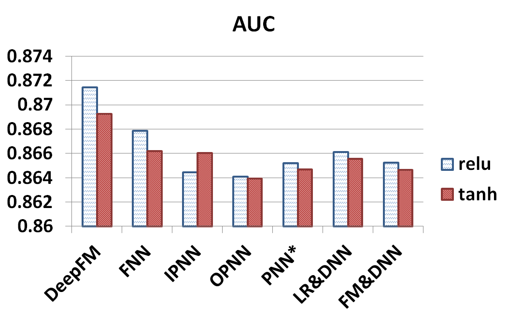
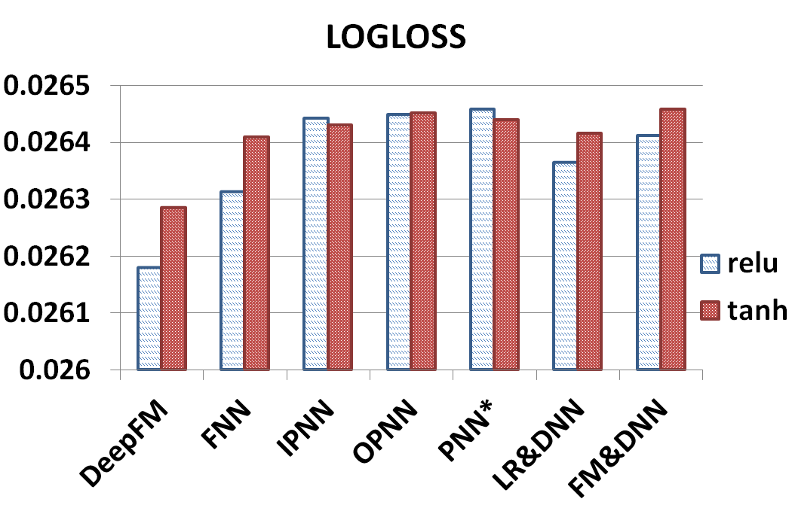
图 7 中文：激活函数的 AUC 和 Logloss 比较。
Dropout is a regularization technique to compromise precision and model complexity; models reach their best performance when dropout is properly set from 0.6 to 0.9.
Dropout 是一种在精度与模型复杂度之间折中的正则化技术；当 dropout 合理设置在 0.6 到 0.9 之间时，各模型能达到自身最佳表现。
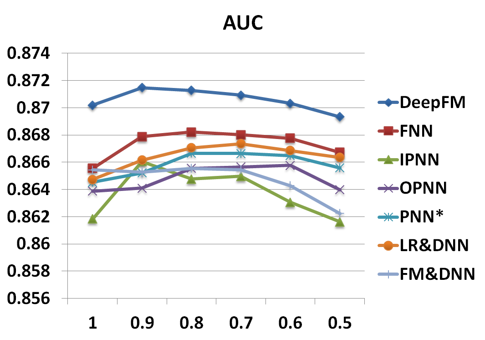
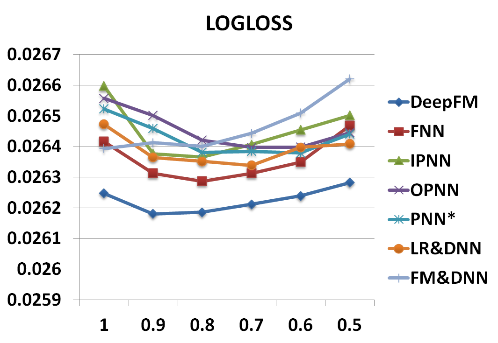
图 8 中文：dropout 的 AUC 和 Logloss 比较。
Increasing neurons per layer introduces complexity and does not always help; 200 or 400 neurons per layer is a good choice in the dataset.
增加每层神经元数量会引入复杂度，并不总是有帮助；在该数据集中，每层 200 或 400 个神经元是较好的选择。
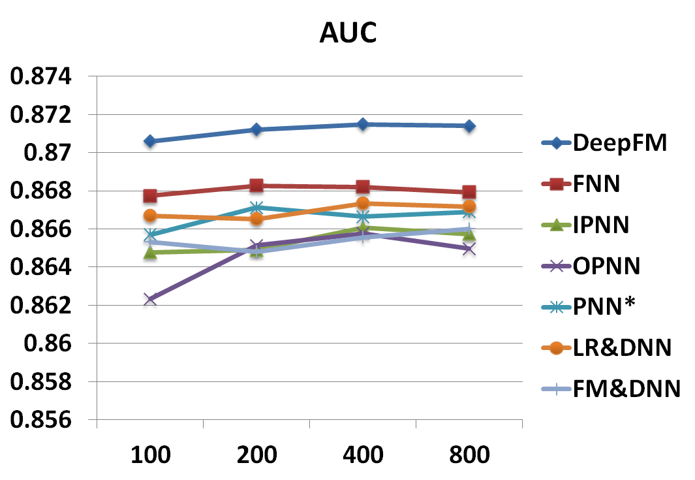
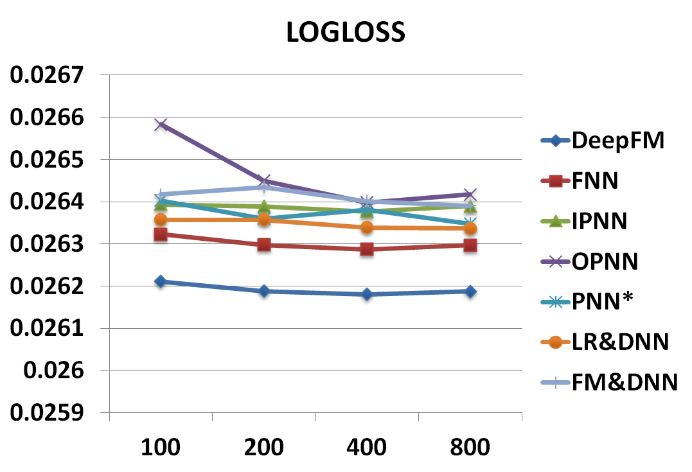
图 9 中文：神经元数量的 AUC 和 Logloss 比较。
Increasing hidden layers improves performance at first, but performance degrades if the number keeps increasing, due to overfitting.
增加隐藏层数量起初会提升性能，但如果继续增加，性能会下降，原因同样是过拟合。
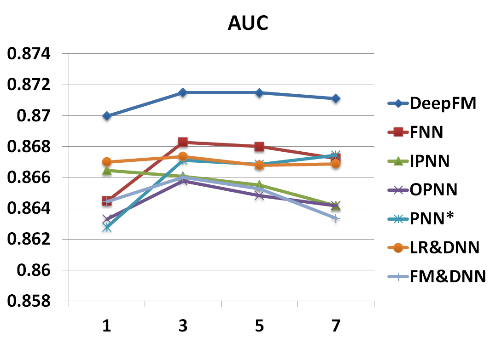
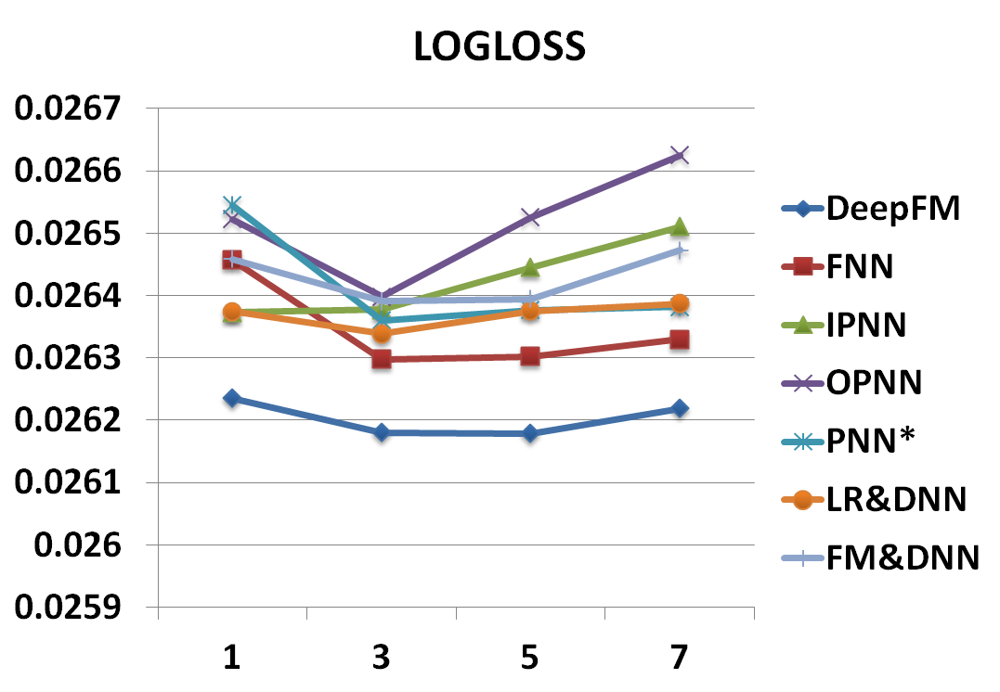
图 10 中文：层数的 AUC 和 Logloss 比较。
The paper tests constant, increasing, decreasing, and diamond network shapes while fixing hidden layers and total neurons.
论文在固定隐藏层数量和总神经元数量时，测试了 constant、increasing、decreasing、diamond 四种网络形状。
The constant network shape is empirically better than the other three options.
经验结果显示，constant 网络形状优于其他三种选项。
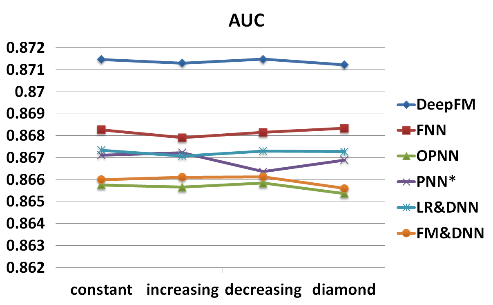
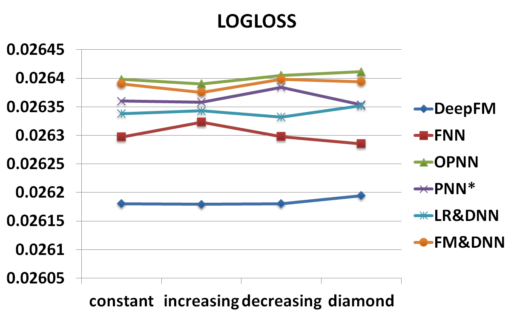
图 11 中文：网络形状的 AUC 和 Logloss 比较。
5 结论 / Conclusions
DeepFM is proposed to overcome shortcomings of state-of-the-art models and achieve better performance.
DeepFM 被提出用于克服当前先进模型的不足，并取得更好的性能。
DeepFM trains a deep component and an FM component jointly.
DeepFM 联合训练一个 deep 组件和一个 FM 组件。
It gains performance improvement because it needs no pre-training, learns both high- and low-order feature interactions, and shares feature embedding to avoid feature engineering.
它获得性能提升的原因在于：不需要预训练，能够学习高阶和低阶特征交互，并通过共享特征 embedding 避免特征工程。
Experiments on Criteo and a commercial App Store dataset demonstrate DeepFM outperforms state-of-the-art models in AUC and Logloss, while efficiency is comparable to the most efficient deep model.
在 Criteo 和商业应用商店数据集上的实验表明，DeepFM 在 AUC 和 Logloss 上优于最先进模型，同时效率可与最高效的深度模型相当。
Future directions include introducing pooling layers to strengthen high-order interaction learning and training DeepFM on GPU clusters for large-scale problems.
未来方向包括引入 pooling 层来增强高阶交互学习能力，以及在 GPU 集群上训练 DeepFM 以处理大规模问题。
参考文献 / References
以下按原文参考文献逐条列出，论文题名保留英文，括号中给出中文说明。
- Boulanger-Lewandowski et al., 2013. Audio chord recognition with recurrent neural networks.（使用循环神经网络进行音频和弦识别。）
- Chang et al., 2010. Training and testing low-degree polynomial data mappings via linear SVM.（通过线性 SVM 训练和测试低阶多项式数据映射。）
- Chen et al., 2016. Deep CTR prediction in display advertising.（展示广告中的深度 CTR 预测。）
- Cheng et al., 2016. Wide & deep learning for recommender systems.（推荐系统中的 Wide & Deep 学习。）
- Covington et al., 2016. Deep neural networks for YouTube recommendations.（用于 YouTube 推荐的深度神经网络。）
- Graepel et al., 2010. Web-scale Bayesian click-through rate prediction for sponsored search advertising.（赞助搜索广告中的 Web 规模贝叶斯 CTR 预测。）
- He et al., 2014. Practical lessons from predicting clicks on ads at Facebook.（Facebook 广告点击预测的实践经验。）
- He et al., 2016. Deep residual learning for image recognition.（用于图像识别的深度残差学习。）
- Juan et al., 2016. Field-aware factorization machines for CTR prediction.（用于 CTR 预测的 field-aware 因子分解机。）
- Larochelle et al., 2009. Exploring strategies for training deep neural networks.（训练深度神经网络的策略探索。）
- Liu et al., 2015. A convolutional click prediction model.（卷积点击预测模型。）
- McMahan et al., 2013. Ad click prediction: a view from the trenches.（广告点击预测的一线实践视角。）
- Qu et al., 2016. Product-based neural networks for user response prediction.（用于用户响应预测的基于乘积的神经网络。）
- Rendle and Schmidt-Thieme, 2010. Pairwise interaction tensor factorization for personalized tag recommendation.（用于个性化标签推荐的成对交互张量分解。）
- Rendle, 2010. Factorization machines.（因子分解机。）
- Richardson et al., 2007. Predicting clicks: estimating the click-through rate for new ads.（预测点击：估计新广告点击率。）
- Salakhutdinov et al., 2007. Restricted Boltzmann machines for collaborative filtering.（用于协同过滤的受限玻尔兹曼机。）
- Sedhain et al., 2015. AutoRec: Autoencoders meet collaborative filtering.（AutoRec：自编码器与协同过滤结合。）
- Srivastava et al., 2014. Dropout: a simple way to prevent neural networks from overfitting.（Dropout：防止神经网络过拟合的简单方法。）
- van den Oord et al., 2013. Deep content-based music recommendation.（深度内容音乐推荐。）
- Wang and Wang, 2014. Improving content-based and hybrid music recommendation using deep learning.（用深度学习改进内容型与混合型音乐推荐。）
- Wang et al., 2015. Collaborative deep learning for recommender systems.（推荐系统中的协同深度学习。）
- Wu et al., 2016. Collaborative denoising auto-encoders for top-n recommender systems.（用于 Top-N 推荐系统的协同去噪自编码器。）
- Wu et al., 2017. Recurrent recommender networks.（循环推荐网络。）
- Zhang et al., 2014. Sequential click prediction for sponsored search with recurrent neural networks.（使用 RNN 进行赞助搜索的序列点击预测。）
- Zhang et al., 2016. Deep learning over multi-field categorical data.（多 field 类别数据上的深度学习。）
- Zheng et al., 2016. A deep and autoregressive approach for topic modeling of multimodal data.（多模态数据主题建模的深度自回归方法。）
- Zheng et al., 2017. Joint deep modeling of users and items using reviews for recommendation.（利用评论联合深度建模用户和物品用于推荐。）